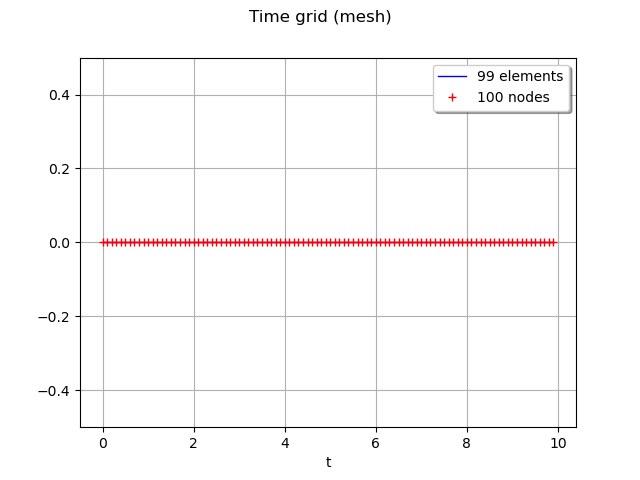
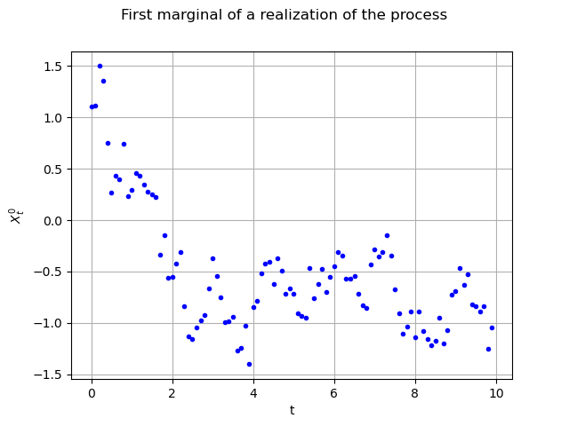
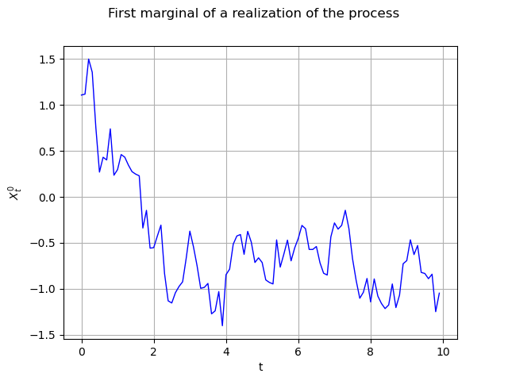
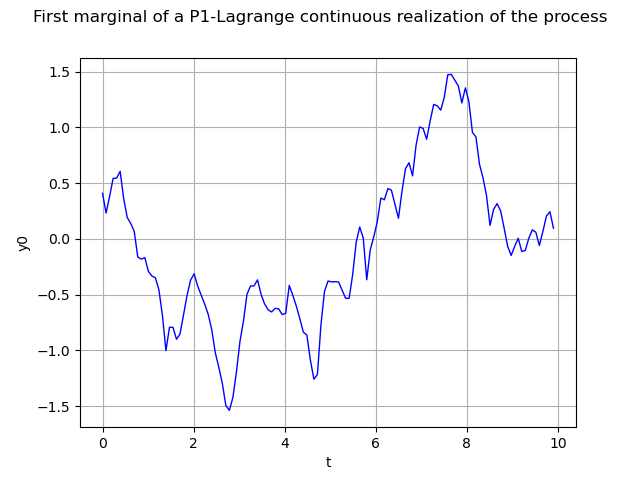
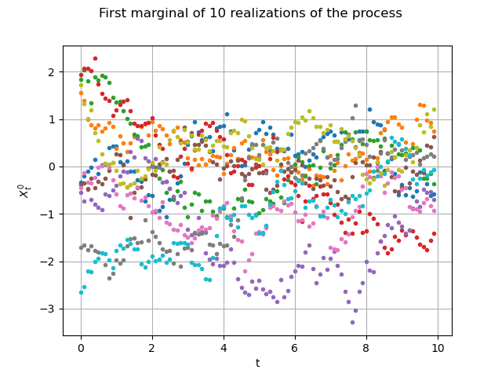
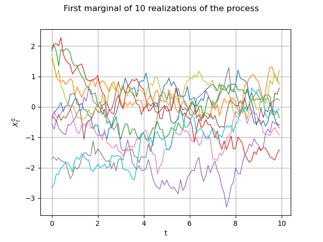

Note
Go to the end to download the full example code
Draw fields¶
The objective here is to manipulate a multivariate stochastic process  ,
where
,
where  is discretized on the mesh
is discretized on the mesh  and exhibit some of the services exposed by the Process objects:
and exhibit some of the services exposed by the Process objects:
ask for the dimension, with the method getOutputDimension
ask for the mesh, with the method getMesh
ask for the mesh as regular 1-d mesh, with the getTimeGrid method
ask for a realization, with the method the getRealization method
ask for a continuous realization, with the getContinuousRealization method
ask for a sample of realizations, with the getSample method
ask for the normality of the process with the isNormal method
ask for the stationarity of the process with the isStationary method
import openturns as ot
import openturns.viewer as viewer
from matplotlib import pylab as plt
ot.Log.Show(ot.Log.NONE)
We create a mesh -a time grid- which is a RegularGrid :
tMin = 0.0
timeStep = 0.1
n = 100
time_grid = ot.RegularGrid(tMin, timeStep, n)
time_grid.setName("time")
We create a Normal process  in dimension 3 with an exponential covariance model.
We define the amplitude and the scale of the ExponentialModel
in dimension 3 with an exponential covariance model.
We define the amplitude and the scale of the ExponentialModel
scale = [4.0]
amplitude = [1.0, 2.0, 3.0]
We define a spatial correlation :
spatialCorrelation = ot.CorrelationMatrix(3)
spatialCorrelation[0, 1] = 0.8
spatialCorrelation[0, 2] = 0.6
spatialCorrelation[1, 2] = 0.1
The covariance model is now created with :
myCovarianceModel = ot.ExponentialModel(scale, amplitude, spatialCorrelation)
Eventually, the process is built with :
process = ot.GaussianProcess(myCovarianceModel, time_grid)
The dimension d of the process may be retrieved by
dim = process.getOutputDimension()
print("Dimension : %d" % dim)
Dimension : 3
The underlying mesh of the process is obtained with the getMesh method :
mesh = process.getMesh()
We have access to peculiar data of the mesh such as the corners :
minMesh = mesh.getVertices().getMin()[0]
maxMesh = mesh.getVertices().getMax()[0]
We draw it :
graph = mesh.draw()
graph.setTitle("Time grid (mesh)")
graph.setXTitle("t")
graph.setYTitle("")
view = viewer.View(graph)

We can get the time grid of the process when the mesh can be interpreted as a regular time grid :
print(process.getTimeGrid())
RegularGrid(start=0, step=0.1, n=100)
A typical feature of a process is the generation of a realization of itself :
realization = process.getRealization()
Here it is a sample of size  (100 time steps, 3 spatial cooordinates and the time variable).
We are able to draw its marginals, for instance the first (index 0) one
(100 time steps, 3 spatial cooordinates and the time variable).
We are able to draw its marginals, for instance the first (index 0) one  , against the time with no interpolation:
, against the time with no interpolation:
interpolate = False
graph = realization.drawMarginal(0, interpolate)
graph.setTitle("First marginal of a realization of the process")
graph.setXTitle("t")
graph.setYTitle(r"$X_t^0$")
view = viewer.View(graph)

The same graph, but with interpolated values (default behaviour) :
graph = realization.drawMarginal(0)
graph.setTitle("First marginal of a realization of the process")
graph.setXTitle("t")
graph.setYTitle(r"$X_t^0$")
view = viewer.View(graph)

We can build a function representing the process using P1-Lagrange interpolation (when not defined from a functional model).
continuousRealization = process.getContinuousRealization()
Once again we draw its first marginal :
marginal0 = continuousRealization.getMarginal(0)
graph = marginal0.draw(minMesh, maxMesh)
graph.setTitle("First marginal of a P1-Lagrange continuous realization of the process")
graph.setXTitle("t")
view = viewer.View(graph)

Please note that the marginal0 object is a function. Consequently we can
evaluate it at any point of the domain, say 
t0 = 3.5678
print(t0, marginal0([t0]))
3.5678 [-0.593188]
Several realizations of the process may be determined at once :
number = 10
fieldSample = process.getSample(number)
Let us draw them the first marginal)
graph = fieldSample.drawMarginal(0, False)
graph.setTitle("First marginal of 10 realizations of the process")
graph.setXTitle("t")
graph.setYTitle(r"$X_t^0$")
view = viewer.View(graph)

Same graph, but with interpolated values :
graph = fieldSample.drawMarginal(0)
graph.setTitle("First marginal of 10 realizations of the process")
graph.setXTitle("t")
graph.setYTitle(r"$X_t^0$")
view = viewer.View(graph)

Miscellanies¶
We can extract any marginal of the process with the getMarginal method. Beware the numerotation begins at 0 ! It may be not implemented yet for some processes. The extracted marginal is a 1D gaussian process :
print(process.getMarginal([1]))
GaussianProcess(trend=[x0]->[0.0], covariance=ExponentialModel(scale=[4], amplitude=[2], no spatial correlation))
If we extract simultaneously two indices we build a 2D gaussian process :
print(process.getMarginal([0, 2]))
GaussianProcess(trend=[x0]->[0.0,0.0], covariance=ExponentialModel(scale=[4], amplitude=[1,3], spatial correlation=
[[ 1 0.6 ]
[ 0.6 1 ]]))
We can check whether the process is normal or not :
print("Is normal ? ", process.isNormal())
Is normal ? True
and the stationarity as well :
print("Is stationary ? ", process.isStationary())
plt.show()
Is stationary ? True